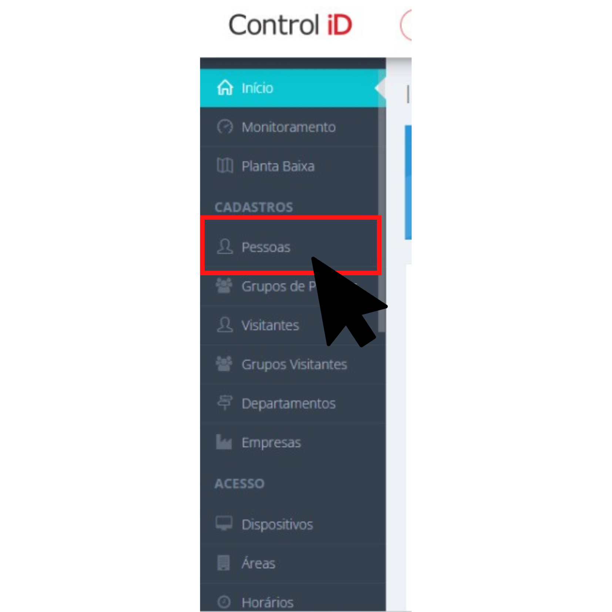
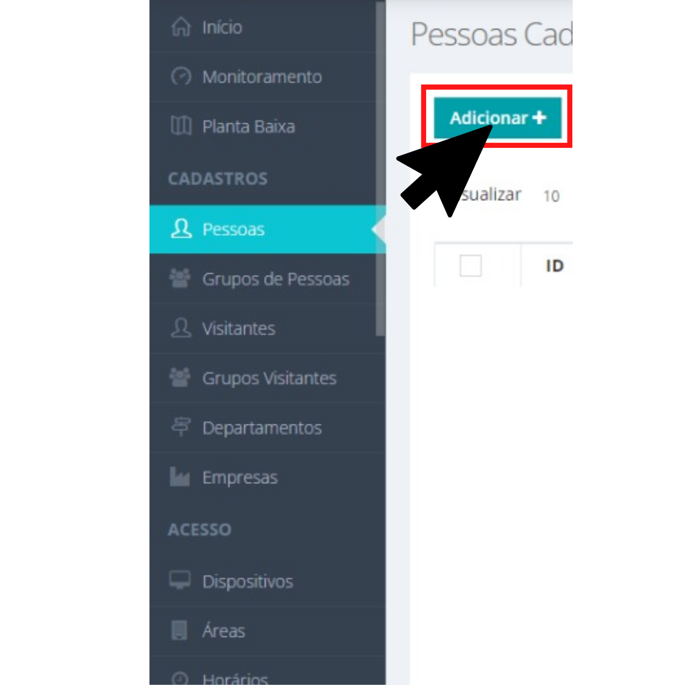
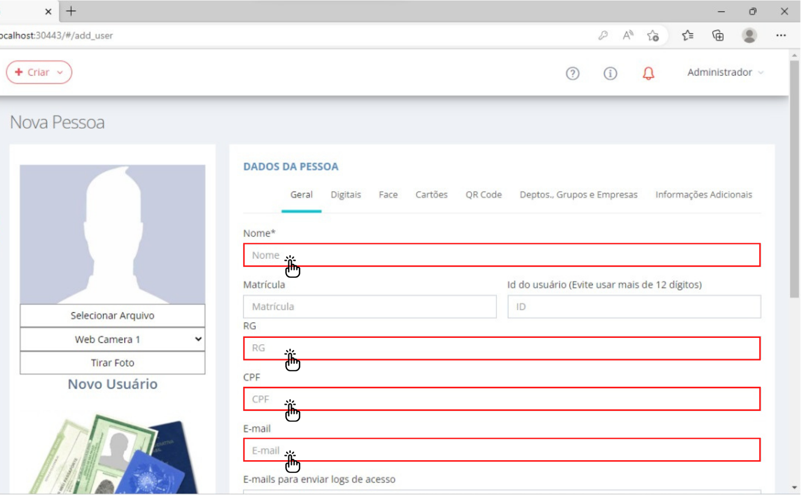
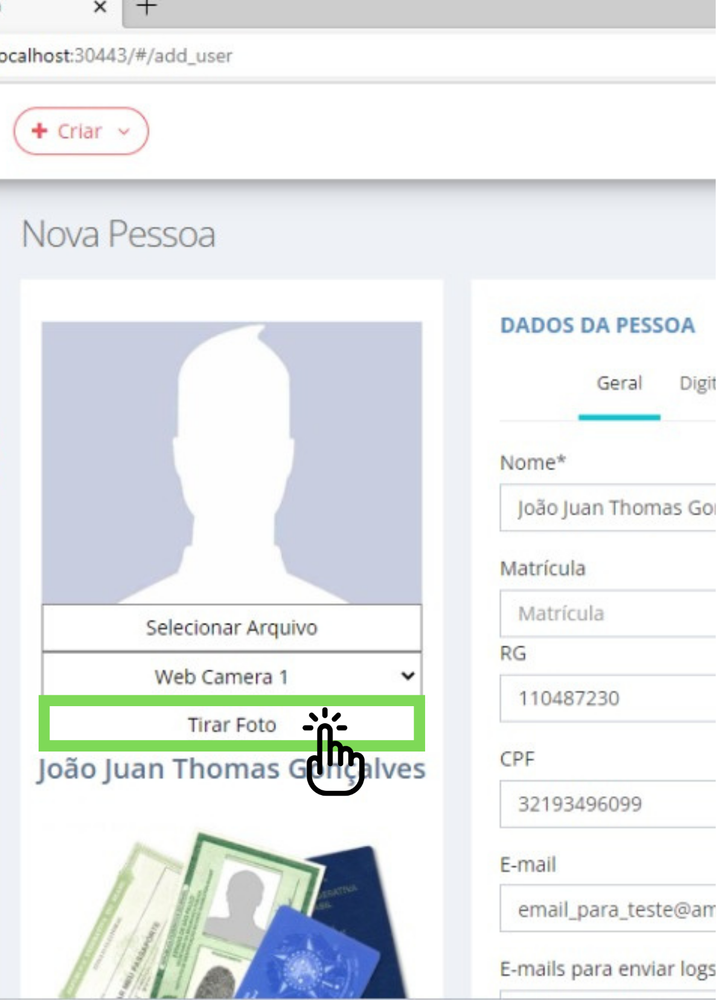
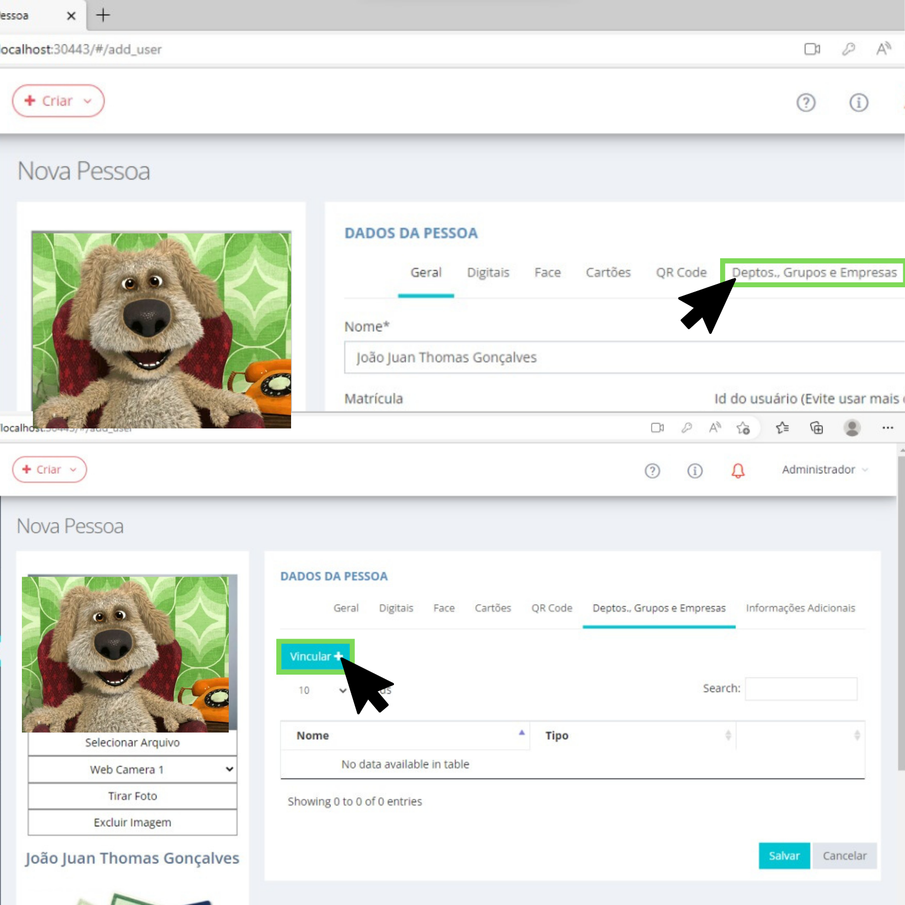
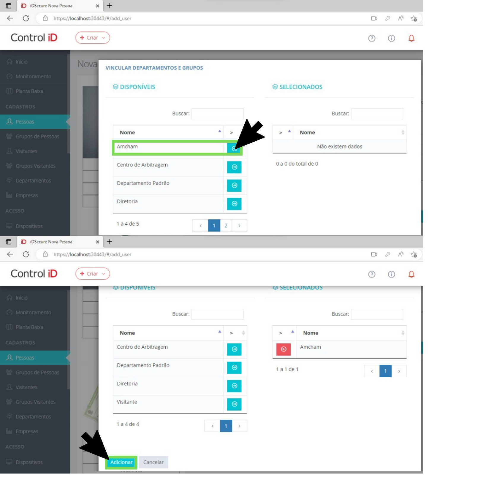

Para cadastrar uma pessoa vá até Cadastro > Pessoas > Adicionar
1. Clique em pessoas.
2. Agora clique em Adicionar
3. Preencha as seguintes informações: Nome, RG, CPF e Email do funcionário cadastrado
4. Após preencher os dados, vamos tirar a foto que será utilizada para reconhecimento facial das catracas basta apertar em "Tirar foto".
Agora clique em "Capturar imagem" e nossa foto está pronta.
Caso queira tirar a foto novamente, clique em "Cancelar" e repita o processo.
5. Agora vamos definir a qual departamento nosso usuário terá acesso, para isso vá até a aba "Depts., Grupos e Empresas" e clique em "Vincular".
Escolhemos um departamento clicando na indicação, descemos a página e clicaremos em "Adicionar"
OBS:Os departamentos Diretoria e Centro de arbitragem funcionam apenas com Digital e Id com senha.
OBS:Desconsiderar o departamento padrão
6. Depois disto só falta especificarmos qual tipo de departamento essa pessoa pertence, por exemplo: Marketing, Segurança, T.I, Business Center,.
Para isso iremos té a aba "Informações adicionais" e rolaremos para baixo até o campo de texto "Cargo", especificamos o departamento da pessoa, rolamos até o final da página e clicamos na opçao "Salvar".
(Final)